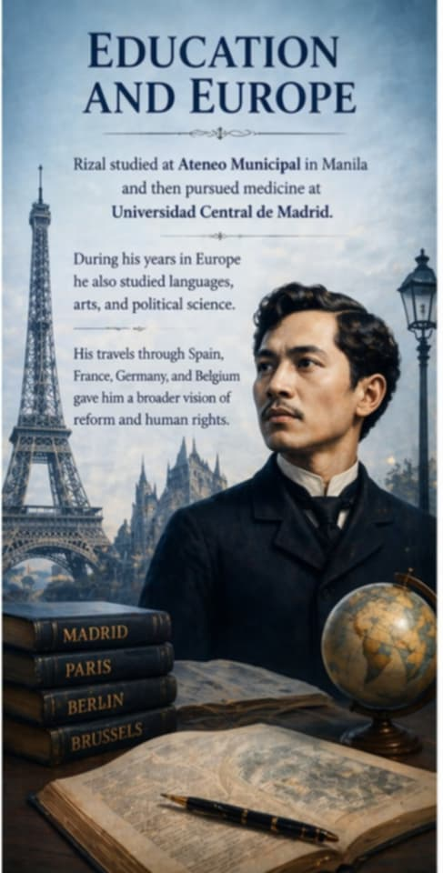
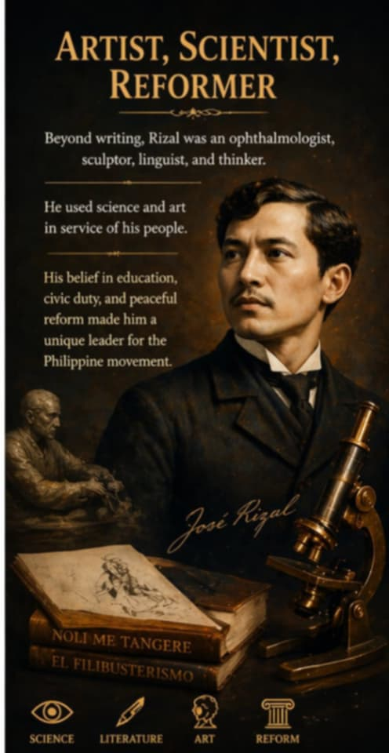

About José Rizal
Early Life
José Protacio Rizal Mercado y Alonzo Realonda was born on June 19, 1861 in Calamba, Laguna. He was the seventh of eleven children and grew up in a family that valued education, language, and national pride.
His parents, Francisco and Teodora, nurtured his talent and taught him that learning and discipline could empower his people.

Education and Europe
Rizal studied at Ateneo Municipal in Manila and then pursued medicine at Universidad Central de Madrid. During his years in Europe he also studied languages, arts, and political science.
His travels through Spain, France, Germany, and Belgium gave him a broader vision of reform and human rights.

Artist, Scientist, Reformer
Beyond writing, Rizal was an ophthalmologist, sculptor, linguist, and thinker. He used science and art in service of his people.
His belief in education, civic duty, and peaceful reform made him a unique leader for the Philippine movement.
Impact and Influence
Voice of Reform
Rizal’s writings exposed the abuses of colonial authorities and encouraged Filipinos to seek justice and equal rights.
His novels and essays helped persuade many to support peaceful reform rather than violent revolution.
National Identity
Rizal inspired a sense of Filipino identity, dignity, and independence. He reminded his countrymen that true freedom begins with knowledge and self-respect.
His life continues to remind Filipinos that character, courage, and ideas can change history.
Major Works
Noli Me Tangere
This groundbreaking novel revealed the injustices of colonial society and sparked the awakening of Filipino national consciousness.
El Filibusterismo
The darker sequel to Noli, this work calls for deep social reform and warns against corruption and oppression.
Letters and Essays
His letters and essays, including writings for La Solidaridad, expressed his social and political views with clarity and conviction.
Poetry and Journalism
Rizal also wrote poetry and newspaper articles that expressed love for country, education, and the human spirit.
Timeline
Birth in Calamba
Born into a loving and educated family, Rizal showed early gifts in language and learning.
Gomburza Execution
The execution of three Filipino priests inspired Rizal and his generation to fight for justice and reform.
Noli Me Tangere Published
Rizal published his first novel in Berlin, exposing the corruption of colonial society and awakening national sentiment.
La Liga Filipina
He established La Liga Filipina to promote education, unity, and peaceful reform among Filipinos.
Martyrdom
Rizal was executed on December 30, 1896 at Bagumbayan, becoming a lasting symbol of freedom and sacrifice.
Famous Quotes
“The youth is the hope of our future.”
“He who does not know how to look back at where he came from will never get to his destination.”
“Freedom has no meaning if it is only inherited and not defended and improved upon.”
“There can be no tyrants where there are no slaves.”
His Legacy Today
A National Symbol
Rizal’s life and letters continue to inspire Filipinos to value education, civic courage, and peaceful change.
An Enduring Vision
From schools to monuments and national holidays, his message still guides the Philippines toward unity and progress.